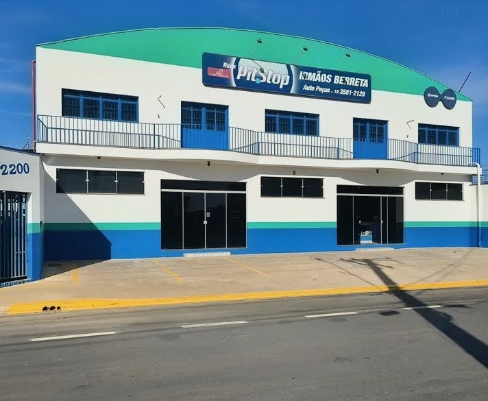
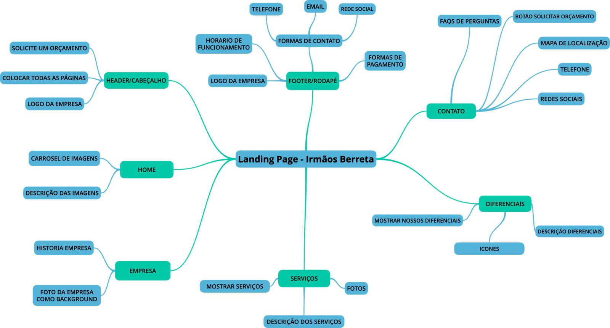

Projeto Integrador
Team 01
Apresentação de Desenvolvimento e Design
Use as setas para navegar (Direita/Esquerda para temas, Cima/Baixo para detalhes)
Engenharia de Software
Processos, Modelagem e Documentação.
↓
A Empresa e sua História

A trajetória:
Origem e Fundação: Os irmãos José e Jorge Berretta começaram a trabalhar na infância e, em 1977, fundaram a Autopeças Mecânica São Jorge em um pequeno galpão na Vila Daniel
Crescimento e Inovação: Com quase 50 anos de história, o negócio expandiu (estando desde 2007 na Avenida João Miziara), tornou-se referência regional na manutenção de caminhões e acompanhou toda a evolução tecnológica do setor — da mecânica manual à era digital.
Impacto Local: Mais do que uma empresa, a oficina gerou empregos, formou profissionais e criou laços profundos com a comunidade.
Mapa Mental

Requisitos
Funcionais
- O site deverá exibir um mapa de como chegar à oficina.
- O site deverá apresentar as perguntas frequentes.
- O site deverá exibir link para whatsapp, telefone e localização.
- O site deverá exibir os diferenciais da empresa (em relação aos concorrentes).
- O site deverá exibir uma seção “Sobre nós”.
- O site deverá formar a página “Home” com um carrossel abaixo do header
- O site deverá exibir os nossos (principais) serviços
Não Funcionais
- O site deverá ser responsivo e adaptável a diferentes dispositivos.
- O site deverá ter um tempo de carregamento inferior a 3 segundos.
- O site deve levar em consideração oscilações de rede (3G/4G).
Objetivo do Projeto
Desenvolver uma landing page para a oficina mecânica com o objetivo de atrair clientela, que permita apresentar a empresa, divulgar seus serviços, exibir informações de contato e possibilitar que os usuários solicitem orçamentos ou agendem atendimentos de maneira simples e intuitiva.
Diagrama UML
Representação do fluxo de dados do sistema.

Tecnologias Utilizadas
Design Digital
Identidade e Visual
↓
1. Criação da Logo
O conceito une o escudo (proteção), o vermelho (paixão/atenção) e a engrenagem (movimento/peças).
2. Como fez a animação
Utilizamos SVG Inline e animações via SMIL e CSS, permitindo giros de engrenagem e efeitos de farol sem scripts pesados.
3. Paleta de Cores
#872A23
#2F302A
#EBECE6
4. As 4 Logos
Variações de aplicação (Thais)
5. Conceito de Grid
Uso de Grid e Flexbox para garantir que os elementos respirem e se alinhem perfeitamente em qualquer tela.
Desenvolvimento Web
Interatividade e Responsividade
↓
1. Descrições Adaptáveis
A descrição dos serviços é alterada dinamicamente via JS/CSS para evitar textos longos em telas pequenas e manter o impacto visual.
2. Accordion (FAQ)
O JavaScript gerencia o estado 'aberto/fechado', altera a altura máxima do conteúdo e inverte o ícone de seta suavemente.
3. Menu Hambúrguer
Implementado com a lógica de Checkbox Hack para funcionalidade básica e refinado com JS para controle de scroll e acessibilidade.
Conclusão
Team 01 - Projeto Integrador
Obrigado pela atenção!